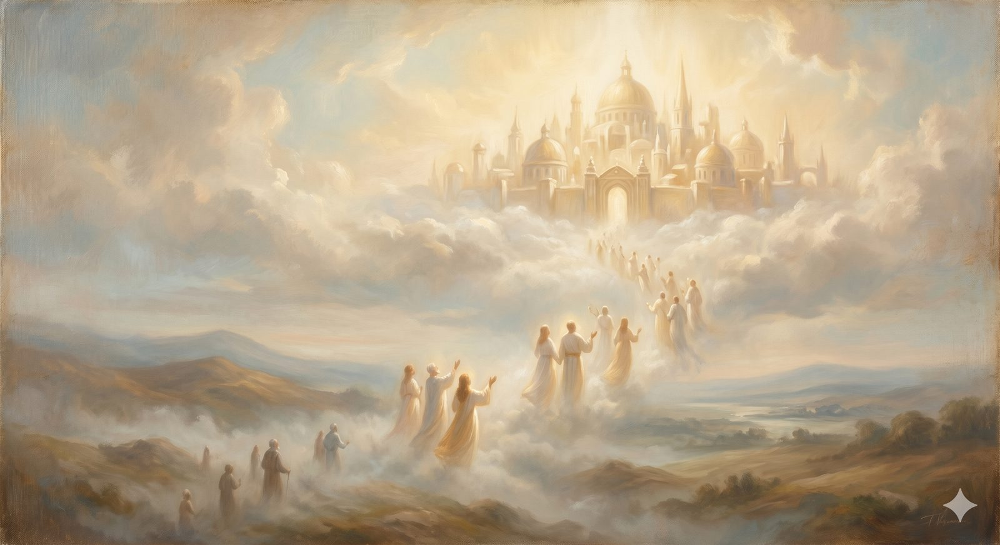

The Celestial City
The open gate and the journey's whole horizon — resurrection, the new creation, and every tear wiped away.
"He will wipe away every tear from their eyes, and death shall be no more, neither shall there be mourning, nor crying, nor pain anymore, for the former things have passed away." Revelation 21:4 (ESV)
They come up out of the river onto the far bank, and the last stretch of road rises toward the gates. Bunyan's pilgrims are met by shining ones who lead them up the hill toward the City, and as they climb they are transfigured — the rags and the weariness of the road falling away — and the bells of the City begin to ring, and the gates are opened, and there is a sound from within of voices and trumpets, and the words spoken over them are the ones every pilgrim has been walking toward: Enter into the joy of your Lord. And here, exactly here, Bunyan lays down his pen — because no one on this side of the river has the words for what is past the gate.
This is the journey's end and its whole horizon: Christian hope. After the diagnosis and the gospel, the climb and the valleys, the fair and the dungeon and the river — this is what it was all for. And it is the one landmark we must describe from the outside, by promise rather than by sight, because it is the only stop on the road that none of us has yet reached. But Scripture is not silent about it, and what it says is better, and stranger, than the caricature most people carry.
Part OneNot clouds and harps
Begin by clearing away the picture that has done so much damage — the one where "heaven" means disembodied souls drifting on clouds, plucking harps, in an eternity of vague and bloodless rest. Serious Christianity has never taught that, and it is worth saying so plainly, because that picture has made the greatest hope ever offered to humanity sound like a tedious afterlife nobody would actually want.
The real hope is not less embodied than this life but more. The New Testament's final word is not souls escaping to heaven but heaven coming down to earth: a new heaven and a new earth, the resurrection of the body, and the whole creation released from its bondage to decay. The Christian does not hope to float forever as a ghost. The Christian hopes to be raised — a real person, in a real and remade world, more solid and more alive than now, not less. Everything good that the broken cisterns only ever counterfeited — beauty, feasting, friendship, work, music, a body, a home — is not abolished in the City but healed and made permanent. The hope is not escape from the world. It is the world itself, at last, made what it was always meant to be.
📖 The Scripture behind this Direct / Entailed›
The claim: The Christian hope is not disembodied souls on clouds but the resurrection of the body and a renewed creation — a new heaven and new earth — more solid and alive than this life, not less.
- Revelation 21:1–3 (ESV) — “Then I saw a new heaven and a new earth … the dwelling place of God is with man.”The final hope is heaven coming down to a renewed earth — not escape from it.
- Romans 8:21–23 (ESV) — “the creation itself will be set free from its bondage to decay … we wait eagerly for … the redemption of our bodies.”Creation itself is redeemed, and the hope is explicitly the redemption of our bodies.
- 1 Corinthians 15:42–44 (ESV) — “It is sown a perishable body; it is raised imperishable … raised a spiritual body.”The resurrection body is real and imperishable — not a ghost, but a transformed body.
The case for Entailed. The full picture — that the resurrection life will be more solid and alive than the present, that every good thing the broken cisterns only counterfeited finds its true form there — is drawn by gathering these texts with the whole Bible’s arc from Eden to the new creation. That synthesis is good and necessary consequence. So the bodily, renewed-creation hope is direct; its fullest contours are entailed.
Where they meet. Scripture directly promises resurrection and a remade world; the whole story confirms it as the restoration of all the journey ached for. Bunyan lays down his pen at the gate because no one this side of the river has words for what is past it — but Scripture tells us it is better, and stranger, and more solid than the caricature.
The bodily resurrection and renewed creation are stated directly; the fullest contours are good and necessary consequence from the whole biblical arc. (The millennium and the timing of these events are secondary matters on which the orthodox differ.)
In plain terms
The Christian hope isn't "your soul goes to heaven and floats around forever." It's bigger and more physical than that: the dead are raised with real bodies, and the world itself is remade — every good thing restored, nothing good lost.
Heaven isn't a consolation prize for leaving a world you loved. It's that world, healed of everything that was ever wrong with it, and kept forever.
Part TwoEvery tear wiped away
At the center of the City's hope is a promise so specific it is almost unbearable to read slowly. John, given a vision of the end, hears a great voice from the throne: Behold, the dwelling place of God is with man. He will dwell with them, and they will be his people. He will wipe away every tear from their eyes, and death shall be no more, neither shall there be mourning, nor crying, nor pain anymore, for the former things have passed away.
Read what it actually says. Not that tears will be explained, or that they never mattered, but that they will be wiped away — personally, by God's own hand, the way a parent wipes a child's face. Every grief the road carried — the wounds of the Slough, the dark of the Valley of the Shadow, the friend lost in Vanity Fair, the terror of the river — every one of them comes with the pilgrim to the gate, and not one of them survives it. Death is not managed in the City; it is abolished. Mourning and crying and pain do not continue at a lower volume; they are gone, because the world that produced them is gone. This is the answer, held back since the very first page, to the ache the City of Destruction named — the homesickness that no good thing on this side could fill. The fountain we walked away from is here, flowing in the middle of the City, and we may drink from it forever.
Part ThreeThe hope that is not a timetable
One caution belongs here, at the end, because the City's hope has so often been distorted into something smaller. The Christian hope is not a code to be cracked — not a calendar of last events to be calculated, not a chart of dates and signs. Sincere believers have disagreed about the order and timing of the things surrounding Christ's return, and the road does not need to settle those debates to hold the hope itself, which is gloriously clear: Christ will return; the dead will be raised; the world will be made new; God will dwell with his people; every tear will be wiped away. The certainty is in the what and the who, not in the when. To turn the City into a timetable is to trade a living hope for a puzzle.
And this hope was never meant to make pilgrims useless to the present world — just the opposite. The people who have done the most for this world, an old observer noted, have been precisely those who thought most of the next: the ones who built the hospitals and freed the captives and loved the unlovable, because they were certain this world was not the end and that nothing done in love would finally be lost. To long for the City is not to abandon the road. It is to walk it with hope.
Every grief the road carried comes with the pilgrim to the gate — and not one of them survives it.
The end of the roadEnter into the joy
And so we end where Bunyan ended, at the open gate, with the trumpets sounding and the words spoken over the arriving pilgrim: Enter into the joy of your Lord. Notice that the welcome is into joy — and into the joy of your Lord, a gladness that was his before it was ever yours, that you are now invited to share without measure and without end.
This is the country every landmark on this road has been pointing toward. The honest mirror, the narrow gate, the rolling away of the burden, the long climb, the dark valleys, the open hands, the key in the pocket, the high mountains, the crossing of the river — all of it was the way home, and the home is real, and the door is open, and the King himself is the joy at the center of it. The whole journey of faith, from the City of Destruction to the Celestial City, is the long road by which a thirsty, burdened, homesick people are brought back to the fountain they were made for — to dwell with God, and to be his, and to have every tear wiped away, forever.
You are somewhere on that road right now. The gate at the end is open. Keep walking.